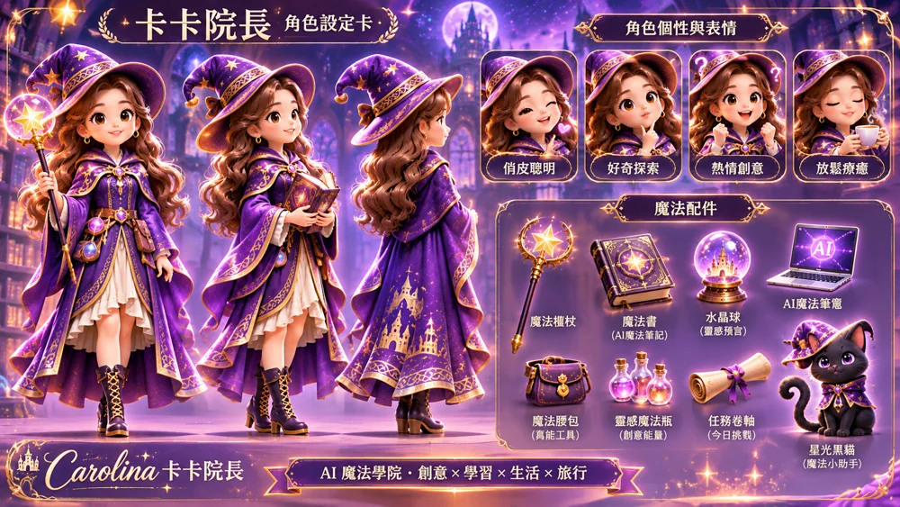
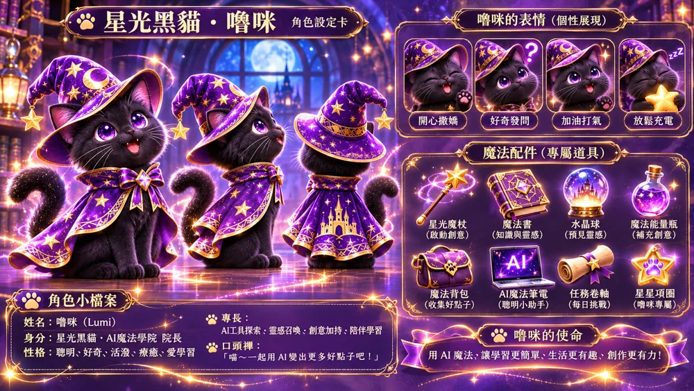

<!doctype html><html lang="zh-Hant"><meta charset="utf-8"><meta name="viewport" content="width=device-width,initial-scale=1"><title>AI 旅行翻譯魔法</title><style>body{margin:0;background:#211438;color:#fff;font:20px system-ui,sans-serif}main{max-width:650px;margin:auto;padding:24px}h1{color:#f5d48b}label{display:block;margin:20px 0 8px}select,textarea,button,a.action{box-sizing:border-box;width:100%;font:inherit;padding:14px;border-radius:12px;border:1px solid #bda4dd}textarea{min-height:120px}button,a.action{display:block;background:#f5d48b;color:#302047;margin-top:12px;text-align:center;text-decoration:none;cursor:pointer}img{width:49%;border-radius:12px}small{font-size:16px}#status{min-height:28px}</style><main><small>卡卡的 AI 魔法學院 · No.001</small><h1>✦ AI 旅行翻譯魔法</h1><p>選擇旅行情境，產生專屬提示詞，再交給 ChatGPT！</p><label for="scene">① 旅行情境</label><select id="scene"><option>餐廳點餐</option><option>問路與交通</option><option>飯店入住</option><option>購物</option><option>機場</option><option>其他</option></select><label for="lang">② 翻譯語言</label><select id="lang"><option>英文</option><option>日文</option><option>韓文</option><option>法文</option><option>泰文</option><option>西班牙文</option><option>義大利文</option><option>德文</option></select><label for="diet">③ 飲食需求</label><select id="diet"><option>無特殊需求</option><option>全素</option><option>蛋奶素</option><option>不吃牛肉</option><option>食物過敏（請在下方補充）</option></select><label for="msg">④ 想說的話或其他需求</label><textarea id="msg" placeholder="例如：請問這道菜有肉或魚嗎？"></textarea><button id="make">✨ 產生魔法提示詞</button><label for="result">你的專屬提示詞</label><textarea id="result" readonly></textarea><button id="copy">複製提示詞</button><div id="status" role="status"></div><a class="action" href="https://chatgpt.com/" target="_blank" rel="noopener">前往 ChatGPT</a><p><small>請將提示詞貼到 ChatGPT。重要過敏資訊請向店家再次確認。只要想學，永遠不嫌晚。</small></p></main><script>const el=id=>document.getElementById(id);function make(){el('result').value=`你是我的旅行翻譯助手。情境：${el('scene').value}。目標語言：${el('lang').value}。飲食需求：${el('diet').value}。我想表達：${el('msg').value.trim()||'請提供此情境常用的五句實用句子'}。請提供自然、有禮貌的當地語言、繁體中文對照及簡易發音提示。若資訊不足請先詢問，不要自行假設過敏原。`;el('status').textContent='提示詞已產生。'}el('make').onclick=make;el('copy').onclick=async()=>{if(!el('result').value)make();try{await navigator.clipboard.writeText(el('result').value);el('status').textContent='已複製！'}catch{el('result').select();el('status').textContent='請手動複製選取的文字。'}};make();</script></html>